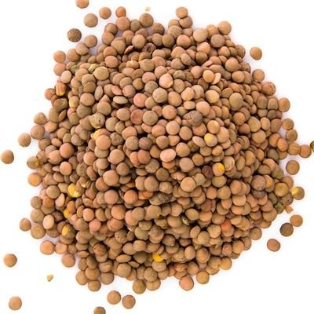

孙悟元
@wuyuandev
vega 是织女星，天琴座 α（gemini 是双子座），Gemini 是不是很久没出新模型了？
composer 似乎没有公开匿名测试的历史，他们之前也没有泄露过自己的模型。但结合cursor泄露人择的模型这点来看，这次模型有可能是Gemini的？
这个模型目前只存在于api中，没法被调用，无法测试风格。

Lentils
@Lentils80
🚨 Update on my earlier scoop:
Composer 3's latest checkpoint is currently being tested in Cursor under the codename "Vega"
It has fast mode and 3 reasoning efforts (medium, high and xhigh)
Public release is expected to be very soon 👀 https://t.co/cn5VJvz2R1